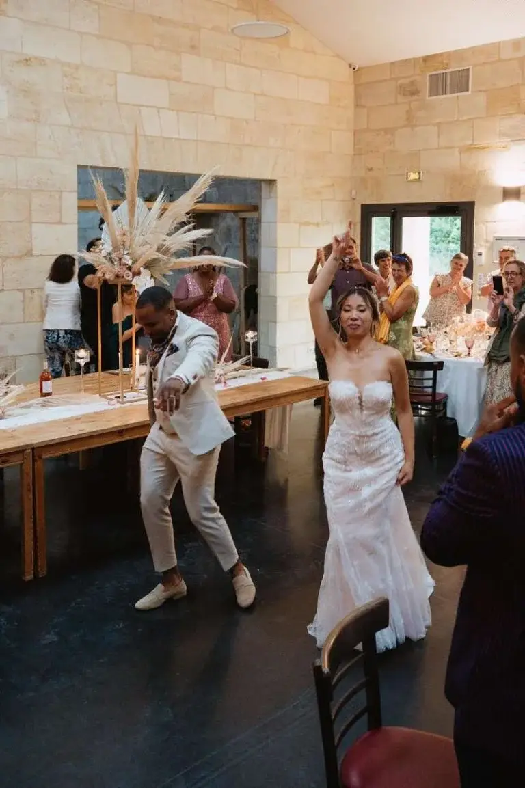
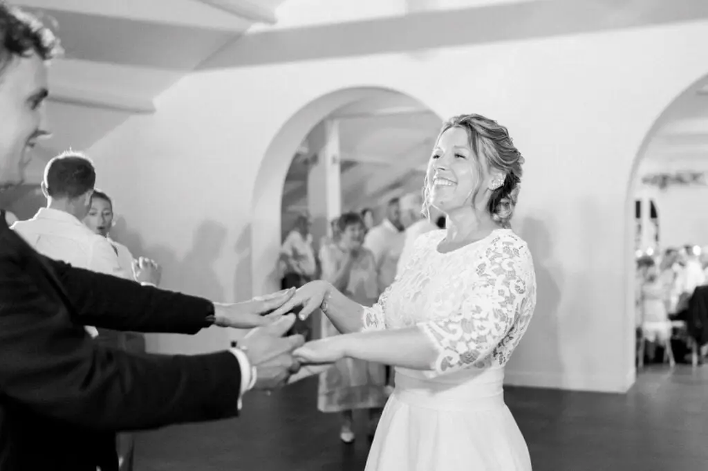
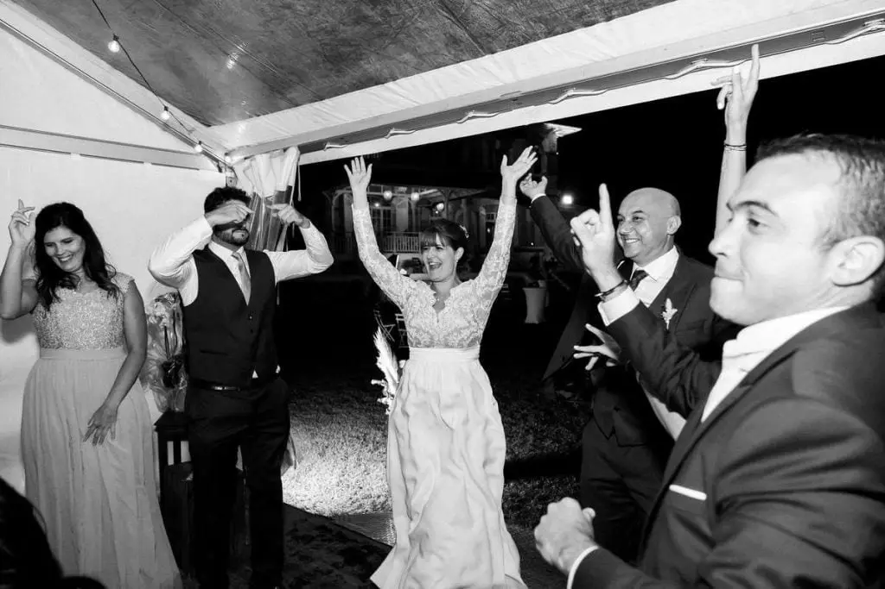
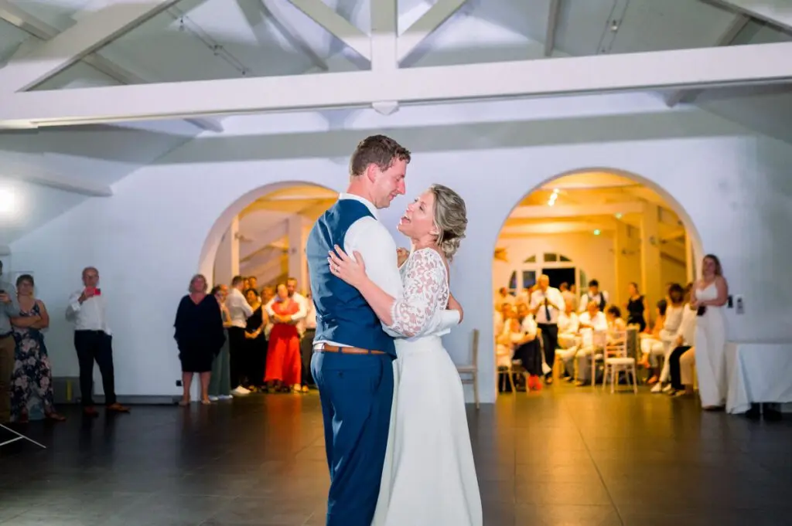
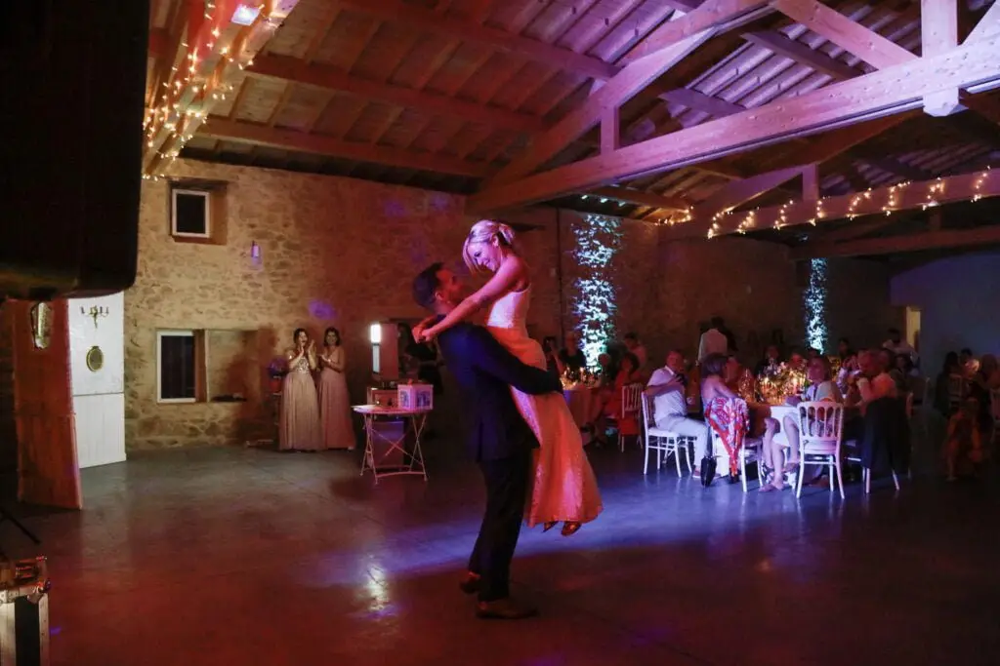

A successful first dance...
How do you create a wonderful first dance for your wedding in or around Bordeaux? It is a magical moment for the newlyweds: the first dance. Whether your wedding is big or small, there are countless ways to create an unforgettable first dance as a couple.

Every first dance is different. The aim is to set your couple apart, but above all to enjoy yourselves. Whether you stay traditional with a slow dance or completely break the codes by surprising your guests, this moment between you and your partner will stay in your memories, so you might as well prepare well.
Some couples start preparing very early by taking dance lessons together and learning a choreography. Simple or not, your choreography can even be inspired by Dirty Dancing if you love Patrick Swayze. You can also keep it simple and improvise, letting your emotions guide you. Not into slow dances? You can easily create a routine to more upbeat music. There are many choices for your dance, your song and your entrance.
And if you really don't like dancing, there are other options. You can simply open the dance floor by cutting a ribbon or launching a countdown, or plan an activity for everyone that sets the mood from the very first moments. For a touch of humour, you could even hand the first dance over to your witnesses. What matters most is starting the evening in a way that suits your couple and your wedding, whatever the theme.
As a wedding planner and wedding designer, I can easily help you organise your wedding. Don't hesitate to get in touch; I'll be delighted to answer you.




Lovely Day Event offers several services
Wedding planning
I step in at every stage of your preparations and guide you through your choices, bringing ideas and suggestions so that your wedding looks like no one but you.
On-the-day coordination
I will be the conductor of your day, managing the suppliers, the set-up of your decor and the smooth running of this beautiful day.
Wedding design
Creative and passionate, I am a certified Wedding Designer and I create a scenographic atmosphere that matches the theme of your wedding. Styling is included in Signature, or offered as an add-on to on-the-day coordination.